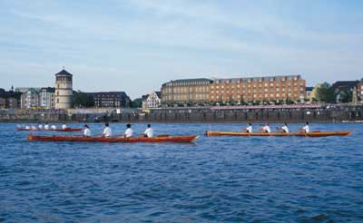
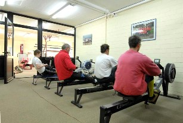
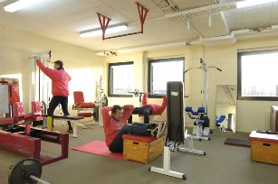
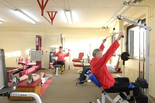
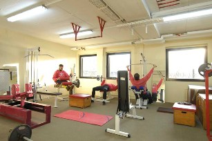

| Breitensport |
| Unser
Clubhaus mit eigenem Parkplatz liegt verkehrsgünstig, einige 100 m unterhalb der
Theodor-Heuß-Brücke, ideal, um in der Sommerzeit nach der Arbeit noch einige Kilometer
entlang der Düsseldorfer Altstadt stromaufwärts zu rudern. Nach der Rückkehr können Sie an warmen Tagen von der Terrasse des Restaurants "Haus am Rhein" die schöne Aussicht auf Yachthafen und Rheinland- schaft genießen. Fußgesteuerte Gigboote vom Zweier bis zum Fünfer ermöglichen das Rudern durchgehend auch in den Wintermonaten. In unserem Kraftraum und Ruderkasten kann während des ganzen Jahres trainiert und Ausgleichssport betrieben werden. Lauffreudige können die Uferpromenade Richtung Schnellenburg für ein Zusatztraining nutzen. Wanderfahrten auf Flüssen und Seen, sowie die Teilnahme an Regatten und Mastersrennen gehören zum sportlichen Programm. Gesellschaftliche Veranstaltungen im Restaurant "Haus am Rhein" oder auf unserem Bootsplatz sind ebenfalls Bestandteil des Vereinslebens. Sportliche Jugendliche und Erwachsene können bei uns das Rudern in einem 3-monatigen Schnupperkurs kennen lernen. Anfänger erhalten nach einer Einführung im Ruderkasten je nach Wetterlage die ersten Übungseinheiten in unserem geschützten Hafen vor unserem Clubhaus. Gute Schwimmkenntnisse werden vorausgesetzt, obwohl man üblicherweise nicht ins Wasser fällt. Als ehemalige Ruderer/innen können Sie bei uns ihre Ruderkenntnisse auffrischen und das Rudern auf dem Rhein erproben. Vielleicht sprechen Sie mit Kollegen oder Kolleginnen und kommen als Gruppe zu einem Schnupperkurs zu uns. Dann macht das Rudern noch mehr Spaß. Wenn Sie mehr erfahren wollen, dann rufen Sie unser Clubsekretariat oder unseren Vorsitzenden Sport Dr. Markus Götz an. Unser modern ausgerüsteter und heller Kraftraum.     |